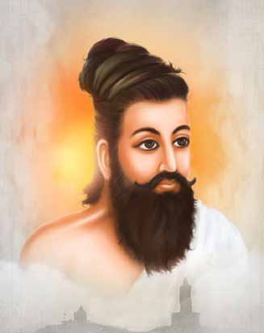
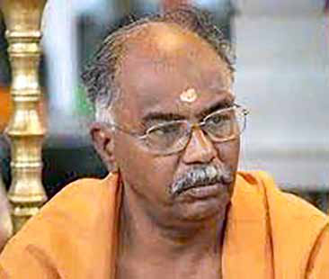
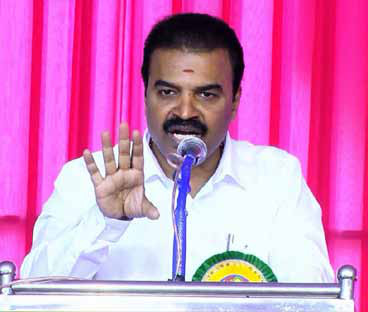
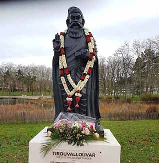
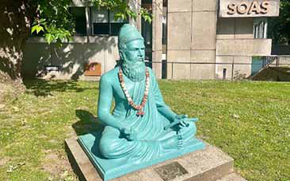
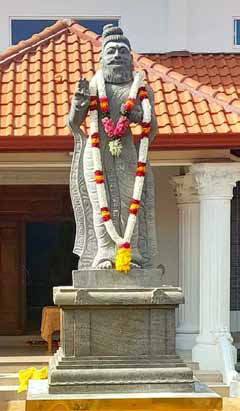
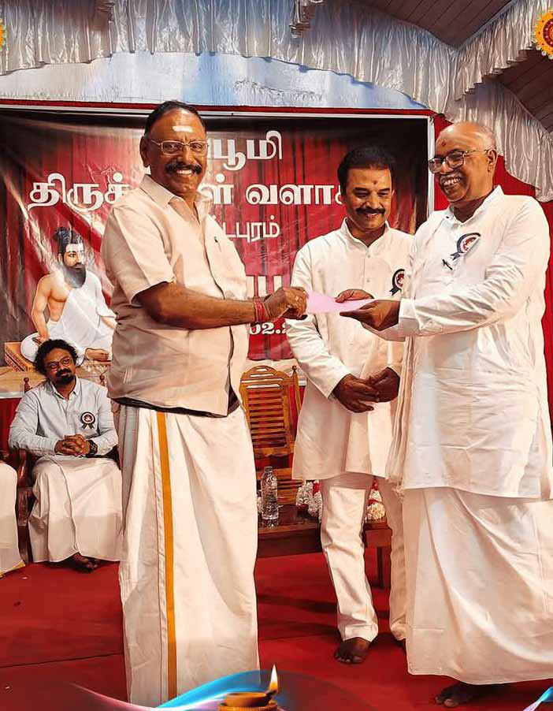
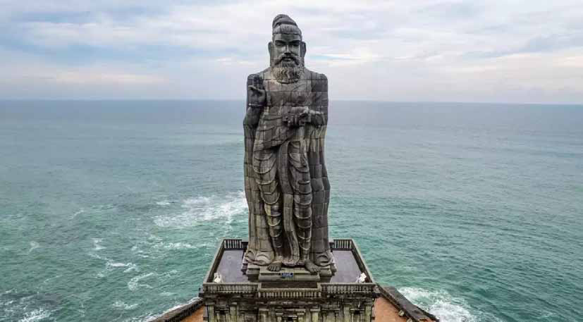
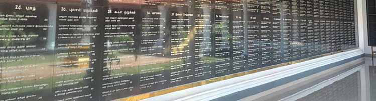

From Jaffna to the world with love: The Mavittapuram Thirukkural ‘Campus’
From Jaffna to the world with love: The Mavittapuram Thirukkural ‘Campus’
Jaffna Monitor hellojaffnamonitor@gmail.com 48 I t was no ordinary day in Jaffna. Sections of the Sri Lankan Tamil community – both in Sri Lanka and beyond, brimmed with a sense of pride mixed with unadulterated joy and anticipation. There was every possibility that the Jaffna peninsula was poised, once again in its long history, to become the seat of learning and reflective wisdom. They were aware that the age old wisdom of the ancient Tamil poet -Thiruvalluvar (jpUts;Stu; or ;srej,a¨j¾), was to be displayed in their land in a format that would resist the decaying effects of the forces of nature for hundreds of years to come. It was indeed a major land mark in the history of post war Jaffna, that a group of philanthropists, local academics and skilled sculptors had pooled their knowledge, time, effort, skills and resources to construct a lasting monument and research facility for the study of Thirukkural (jpUts;Stu; or ;srej,a¨j¾) – one of the oldest Tamil texts. The Thirukkural campus, was declared open on this sunny day and dedicated to the country and the entire humanity seeking the timeless wisdom of Thiruvalluvar on virtue (mwk; or .=KO¾u), wealth (nghUs; or Okh) and pleasure (,d;gk; or i;=g). The auspicious date was the 2nd February 2025, the location was Mavittapuram, a little inconspicuous village approximately 18km away from the Jaffna town and the agency that made this dream a reality was the Sivapoomi Trust – a highly respected local charity and its dynamic Chairman Mr Arumugam Thirumurugan. Of course Mavittapuram has had its hay days with its mythological links to the 8th century Chola princess – Mathurapuraveeravalli, who overcame her physical disfigurement BY: Mahesan Nirmalan MBBS, MD, FRCA, PhD, FFICM Manchester, United Kingdom From Jaffna to the world with love: The Mavittapuram Thirukkural ‘Campus’

Jaffna Monitor
hellojaffnamonitor@gmail.com
49
by worshipping at the Mavittapuram
Kandaswamy temple and then bathing at
the adjoining Keerimalai springs. The recent
history of Mavittapuram however is marred by
war, artillery shells, areal bombardment and
the consequent displacement of the population
resulting in the entire neighbourhood
becoming an abandoned and desolate
war-zone. The changes in the surrounding
environment when the war ended and the
resultant optimism of the population as the
lands were handed over to their owners was
most palpable. The news of the opening of the
Thrikkural ‘campus’ was certainly the icing on
the cake.
Built in the shadows of the above-mentioned
Mavittapuram Kandaswamy temple and in
close proximity to the Keerimalai springs and
the ancient Keerimalai Naguleswaram temple,
this landmark building, will no doubt draw
the attention of scholars and laity with an
interested in ancient literatures of the world.
Commenting on the event, Mr Thirumurugan,
expressed his wish that this facility would,
over time, evolve into a fully- fledged research
institute dedicated to the critical study of
Tamil culture.
A
B
The facility will display all 1330 ‘Kurals’
engraved by hand in thick black granite
stone slabs, along with Sinhala and English
translations of selected sections. The inclusion
of Sinhala and English translations renders
the possibility that this unique ‘campus’ can
become part of the common heritage of all
people living in Sri Lanka – owned by all and
A: Mr Arumugam Thirumurugan,
Chairman of the Sivapoomi Trust which
was responsible for the construction of
the Thirukkural ‘campus’. The Sivapoomi
Trust commemorates its 25th anniversary
in 2025 and during the past 25 years has
been responsible for successfully completing
many projects in many parts of the country
aimed at protecting the Tamil and Hindu
identity in the Island. The Trust has worked
on the basis that post-war reconstruction
needs to be multi-faceted and that cultural
regeneration needs to be an integral
component of this project.
B: The chief guest, Hon. Mr R Mahadevan,
Judge of the Supreme Court of India and an
outstanding orator who displayed his deep
understanding of Tamil literature in his
speech holding the audience spellbound.


Jaffna Monitor hellojaffnamonitor@gmail.com 50 cherished by all. It is unfortunate that funding available was not adequate to provide English and Sinhala translations to all 1330 Kurals. Nevertheless, what is on display is adequate to give a comprehensive feel of the book to those visitors wishing to explore this piece of Tamil literature further. The Thirukkural (jpUts;Stu;), or ‘Kural’, is estimated to have been written between 300 BCE and the 5th century CE. Whilst it is generally accepted that the ‘Kural’ is from the post ‘Sangam period’, the exact dating is still widely debated. The content of Thirukkural spans a wide range of topics including ethics, morality, love, governance, and spirituality in the form of couplets - each consisting approximately 8-10 words. The author’s religion has also been a subject of speculations with all major religions of the time - Jainism, Hinduism and Buddhism, being suggested by different authorities. This uncertainty has, at times led to disputes on whether, the statues of Thiruvalluvar should include symbols - such as ‘Holy Ash’ and the Rudraksha mala (chain made of rudraksha beads commonly worn by orthodox Hindus on special occasions), usually associated with Saivaism. It is indeed an irony of our times that a personality such as Thiruvalluvar, who in his own life transcended ethnicity and religion, should evoke such parochial debates in our society. The religious background of Thirukkural is hard to determine. The verses are definitely embedded within a milieu of faith and divinity, though the exact nature of that divinity remains open to speculation. Attributes such as ‘seated on the lotus of the heart’ (kyu;kpir Vfpdhd;), ‘free from likes and dislikes’ (Ntz;Ljy; Ntz;lhik ,yhd;), ‘A lord without peer’ (jdf;Ftik ,y;yhjhd;), ‘An ocean of wisdom’ (mwpthop me;jzd;) and a ‘Lord with eight attributes’ (vz; Fzj;jhd;) have been used to describe this divinity and these descriptions have been interpreted in different ways. The text also acknowledges the concepts of rebirth, destiny and the eternal journey of ‘samsara’ driven by abstract karmic forces. These concepts are however common to Hinduism, Buddhism and Jainism. The Kural also recommends the path of devotion and abject surrender to the supreme (or god) as means of extricating oneself from samsara. “gpwtpg; ngUk;fly; ePe;Jtu; ePe;jhu; ,iwtd; mbNruh jhu;”
(Kural 10) “Only those persons who hold on to the lord’s feet will cross the great ocean of birth and deaths; it is impossible for the others to do so” (Thirukkural by S N Sri Ramathesikan, Gangai Puthaka Nilayam, Chennai 2006 ) is an example of this general sentiment. This emphasis on devotion as the path towards extrication from ‘samsara’, suggests a strong leaning towards Hinduism, even though this assertion is debatable. Within this general framework of spirituality more worldly issues such as household life, hospitality, humility, love, kind speech, fame, truthfulness, vegetarianism, honesty, non-violence, detachment, learning, wisdom, governance, friendship, nationhood, military strength and even sex are presented. mQ;rhik <if mwpT+f;fk; ,e;ehd;Fk; vQ;rhik Nte;ju;f;F ,ay;G
Kural 382 Bravery, generosity, knowledge and zeal- these four characteristics mark a person fit to be a ruler (Thirukkural by S N Sri Ramathesikan, Gangai Puthaka Nilayam, Chennai 2006) and Cly; czu;jy; Gzu;jy; ,itfhkk; $bahu; ngw;w gad;
Kural 1109 The lover and the beloved meeting & separating, the consoling of the beloved by the lover after separation and then having intercourse; these three are rated as blessings to those living happily (Thirukkural by S N Sri Ramathesikan, Gangai Puthaka Nilayam,
Jaffna Monitor hellojaffnamonitor@gmail.com 51 Chennai 2006) are examples of kurals within a more secular framework. The fact that these facets of life have been considered in detail almost 1500 years ago and expressed through succinct poetic language in order to influence wider society is clearly a measure of Thiruvalluvar’s genius. There is consensus that Thirukkural is relevant to the whole of humanity across all ages. It is for this reason that the book has been translated into over 50 languages and immortalised through the installation of Thiruvalluvar’s statue in many countries outside the Tamil speaking world.
A
B Thirukkural has been part of the curriculum in Sri Lankan Tamil medium schools for a very long time. Most public speakers frequently invoke sayings from Thirukkural to strengthen his/her arguments and such illustrations are savoured by the listening audience. As such Thiruvalluvar has been held in high esteem with several statues commemorating the poet in different parts of the country. However, creating statues and thereby making demi-gods out of such illustrious men (and women) from history, may potentially dilute their message to humanity. Gods (and demi- gods) are usually worshiped and subject to adoration rather than their teachings being subject to rational analysis in order to be internalised, so that they may positively influence human behaviour. By taking their messages away from the intellectual domain and placing them within the realms of the divine, the opportunity to influence ordinary human lives are missed. It is in this context that the new ‘Thirukkural Campus’ at Mavittapuram - encouraging the study, debate and further scrutiny of Thirukkural, becomes important. The far-reaching vision of Mr Arumugam Thirumurugan, in encouraging this critical approach needs to be seen as a positive example in post-war nation building. In addition to the granite engravings the Sivapoomi Trust volunteers have also sourced multiple translations and commentaries of Thirukkural and have made them publicly available to all those who seek wisdom. Hon. Mr R Mahadevan, Judge of the Supreme Court of India, participated as the chief guest at the opening day celebrations on the 2nd February 2025. In his speech he demonstrated his outstanding scholarship in Tamil and Sangam literature and emphasised the relevance of Thirukkural to contemporary society. The power of Mr Mahadevan’s prose and his wide knowledge and ability to relate the lessons of Thirukkural to other Tamil classics such as ‘Kamba Ramayanam’ (or The statues of Thiruvalluvar at the University of London (A), United Kingdom and in the French town of Cergy (B)


Jaffna Monitor hellojaffnamonitor@gmail.com 52 ‘Ramavataram’ the adaptation of Valmiki’s Ramayana by the Tamil poet Kamban in the 12th century) and Sangam literature mesmerised the participating audience. The legendary Tamil journalist and editor of the Tamil Nadu based news daily ‘Dinamani’ Mr K Vaidyanathan was the guest of honour at the opening ceremony. In his speech he observed that just as much as Mecca is a place of great significance to the Muslims, or Jerusalem is a place of piety and reverence to The statue of Thiruvalluvar carved from a single block of granite stone on display at the new ‘Thirukkural campus’. The carving was done by an Indian sculptor who stayed in Jaffna for the entire duration of the project From Left: Legendary Indian journalist and Dinamani editor K. Vaidyanathan, Chief Guest Hon. Mr. R. Mahadevan, Judge of the Supreme Court of India, and Mr. Aru Thirumurugan, Chairman of the Sivapoomi Trust. Dinamani Editor K. Vaidyanathan presents a cheque of ₹1 lakh on behalf of Supreme Court Judge R. Mahadevan to Aru Thirumurugan. the Christians, or Varnasi (or Kashi) is a place of devotion and salvation to the Hindus, Jaffna has a special significance to the entire Tamil speaking world. He went on to observe that the history of Jaffna – both ancient and contemporary, resonates strongly within the Tamil psyche and hence the construction of the Thirukkural campus in Jaffna was most appropriate and was a recognition of these sentiments. These observations, no doubt evoked very strong feelings in the minds of all participants. The event was also marked by music, debates and poetry with several other artists and academics from


Jaffna Monitor
hellojaffnamonitor@gmail.com
53
South India and Sri Lanka taking part. The
campus building also has limited residential
facilities for visiting scholars – internal and
external, and the pull factor of the entire
complex is bound to become a major tourist
attraction in Northern Sri Lanka.
The project has been undertaken through
philanthropic funding and completed within
a relatively short time period – given the
complexities inherent in transcribing a large
volume of text into manual granite carvings.
It is also most appropriate that this facility is
being dedicated to the people of Sri Lanka
in 2025, which marks the 25th anniversary
of the Sivapoomi Trust. In dedicating this
facility to the country, Mr Thirumurugan
expressed his hope that the community will
cherish this facility and the underpinning
sentiments of all those responsible for its
successful construction for centuries to come.
Thiruvalluvar’s messages – like that of the
Buddha, Jesus or Ghandi belong to the whole
of humanity. He clearly transcended narrow
boundaries and challenges us also to do
so……….will we listen?
The display of Thirukkural engraved in
granite stones on display with English
translations. The mammoth task of engraving
all 1330 Kurals and the relevant translations
in English and Sinhala were done by a
local sculptor Mr Vindodh, who lives in
Bharathipuram in Kilinochchi district. Mr
A Thirumurugan and a team of volunteers
affiliated to the Sivapoomi trust, did the
painstaking task of proof reading.
Valluvar Statue, Kanyakumari
– A 41m (133 ft) stone sculpture
of Tamil poet Thiruvalluvar,
author of the Thirukkural,
standing at the southernmost
tip of India where the Bay
of Bengal, Arabian Sea, and
Indian Ocean meet.

